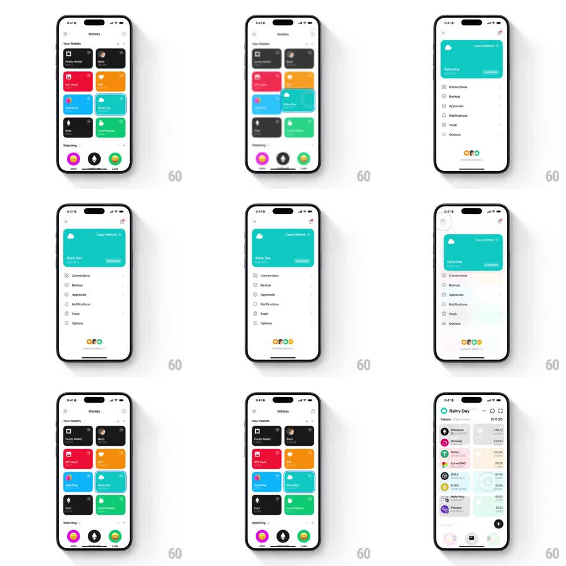

Media
Frame-by-frame

Rebuild this interaction 1:1: Family's wallet card morph - tapping the teal "Rainy Day" card in the light Wallets grid expands it into a full-screen wallet page (settings rows or token asset list) with the card riding to the top as the header, then shrinks it back into the grid with spring physics.

Rebuild this interaction 1:1: Family's wallet card morph - tapping the teal "Rainy Day" card in the light Wallets grid expands it into a full-screen wallet page (settings rows or token asset list) with the card riding to the top as the header, then shrinks it back into the grid with spring physics.
## Integration
Integration: stack-agnostic spec - springs given as stiffness/damping, timed motions as duration + curve; map every value to your framework and animation library of choice.
## Scene
Light Wallets grid: "Your Wallets" cards (Family Wallet, Benji, NFT Vault, Base Dawg, Burning, Rainy Day teal, Fren, Luke's Money), "Watching" row (John, vitalik.eth, Luke). Expanded states: (a) wallet settings - the teal card as a header ("Rainy Day 1.5 ETH", "Color Address 15"), rows for Connections, Backup, Approvals, Notifications, Trash, Options, avatar cluster at bottom; (b) asset list - "Rainy Day, Tokens $111.56" with rows (Ethereum $40.72, Uniswap $33.43, Tether $23.93, Curve DAO $11.91, GALA $6.36, BUSD, Hello Pets, Polygon...).
## Motion spec
Pattern: card-to-screen morph with spring return.
- Tap the card: it lifts (scale 1.03, shadow, 100ms) then expands - width and height growing to full screen (spring ~280/20, 350ms), corner radius easing 16 -> 0 at the edges - while sibling cards fade and dim (200ms).
- The card's label content crossfades into the header layout (200ms); the body content (settings rows or token list) staggers in beneath it (50ms per row, translateY 10pt -> 0).
- An X/back control fades in top-left (200ms); the bottom avatar cluster pops (scale 0.8 -> 1, spring ~340/16).
- Back: the body staggers out (30ms rows, 150ms), the card shrinks back to its grid cell (spring ~300/18, overshoot on the settle), and siblings fade back in (200ms).
## Calibration
- The card keeps its teal fill the whole time - it is the same surface growing, not a new screen.
- Grid siblings stay in position; they dim, never shift.
## Reduced motion
Card and screen crossfade (250ms) without bounds animation.
## Don't miss
- The header keeps the card's art (cloud glyph, name, balance) pixel-continuous through the morph.
- Both expanded states (settings, assets) use the identical morph - the card is the anchor either way.